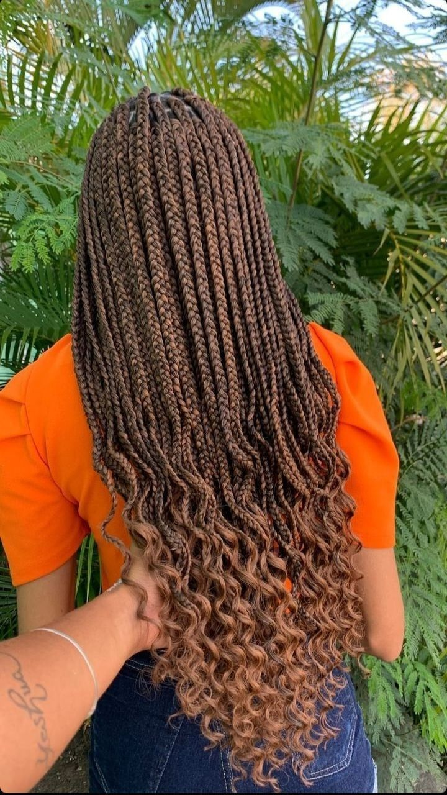
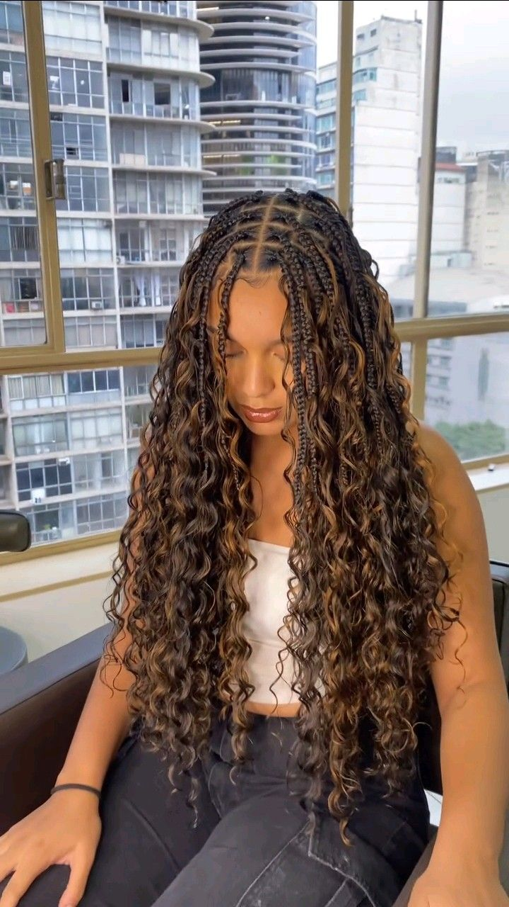
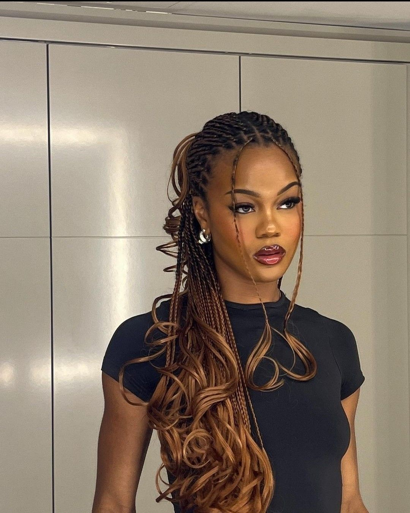

Knotless vs. box braids: ¿cuál elegir?
Las box braids son un estilo clásico que consiste
en dividir el cabello en secciones y trenzar cada
una de ellas. Se pueden realizar en diferentes
largos, grosores y colores, por lo que permiten
crear una gran variedad de looks.
Las knotless braids se diferencian porque comienzan
con el cabello natural y las extensiones se añaden
progresivamente. Cuando se instalan correctamente,
pueden generar menos tensión en la raíz y ofrecer
una apariencia más natural.
Para elegir entre ambos estilos, es importante
considerar el tiempo de instalación, el presupuesto,
el mantenimiento y la comodidad. Ningún peinado
debe provocar dolor o tensión excesiva.

Ejemplo de trenzas knotless.
Bohemian y french curls: trenzas con movimiento
Las bohemian braids son trenzas que combinan secciones trenzadas con mechones ondulados que quedan sueltos. Este detalle
crea un aspecto natural, relajado y con mucho movimiento, convirtiéndolas en una opción ideal para quienes buscan un peinado
que combine elegancia y un estilo desenfadado. Su acabado aporta textura y volumen al cabello, creando una apariencia
delicada y versátil que puede adaptarse a diferentes gustos y ocasiones.

Las French curls son un estilo de trenzas que se caracteriza por combinar secciones trenzadas con rizos largos y definidos en las puntas. Este peinado destaca por su apariencia elegante, femenina y sofisticada, ya que los rizos aportan volumen,
movimiento y un acabado delicado que hace que las trenzas luzcan diferentes a los estilos tradicionales.

Ambos estilos ofrecen distintas posibilidades
de personalización mediante el largo, el color
y el grosor. Sin embargo, los mechones sueltos
y los rizos requieren atención para reducir
los enredos causados por la humedad y el roce.
Para conservar el peinado, se recomienda proteger
el cabello al dormir con un gorro o pañuelo de
satín y desenredar los rizos suavemente.